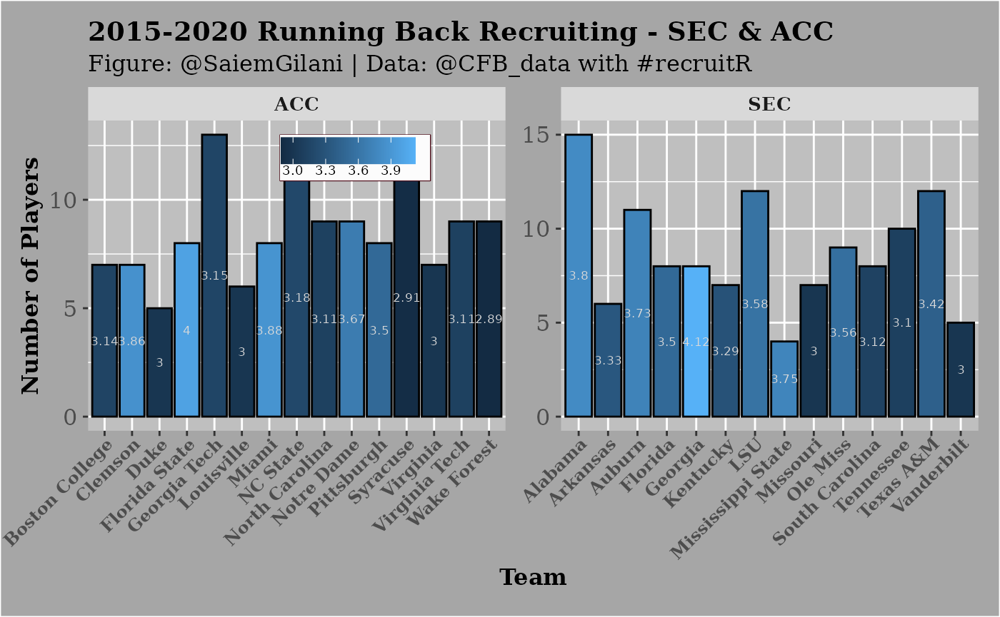

Running Backs Recruiting 2015-2020: SEC & ACC
This is a basic example which shows you how to solve a common problem:
if (!requireNamespace('pacman', quietly = TRUE)){
install.packages('pacman')
}
pacman::p_load_current_gh("sportsdataverse/recruitR")
pacman::p_load(dplyr, ggplot2)Let’s say that we are interested in seeing how teams in either the
SEC or ACC fared in running back recruiting from 2015-2020. We could
gather the information on each conference using the
cfb_recruiting_position function, like so:
sec_positions <- cfbd_recruiting_position(start_year=2015,
end_year = 2020,
conference = 'SEC')
acc_positions <- cfbd_recruiting_position(start_year=2015,
end_year = 2020,
conference = 'ACC')
sec_rbs <- sec_positions %>%
dplyr::filter(position_group == "Running Back") %>%
dplyr::arrange(desc(avg_stars))
acc_rbs <- acc_positions %>%
dplyr::filter(position_group == "Running Back") %>%
dplyr::arrange(desc(avg_stars))
rbs <- dplyr::bind_rows(sec_rbs,acc_rbs)
print(rbs)## ── Recruiting position group info from CollegeFootballData.com ─────────────────## ℹ Data updated: 2026-06-13 03:16:28 UTC## # A tibble: 28 × 7
## team conference position_group avg_rating total_rating commits avg_stars
## <chr> <chr> <chr> <dbl> <dbl> <dbl> <dbl>
## 1 Georgia SEC Running Back 0.943 7.54 8 4.12
## 2 Alabama SEC Running Back 0.919 13.8 15 3.8
## 3 Mississi… SEC Running Back 0.903 3.61 4 3.75
## 4 Auburn SEC Running Back 0.903 9.93 11 3.73
## 5 LSU SEC Running Back 0.907 9.98 11 3.64
## 6 Ole Miss SEC Running Back 0.901 7.20 8 3.62
## 7 Florida SEC Running Back 0.902 6.32 7 3.57
## 8 Texas A&M SEC Running Back 0.891 9.80 11 3.45
## 9 Arkansas SEC Running Back 0.885 4.42 5 3.4
## 10 Kentucky SEC Running Back 0.875 3.50 4 3.25
## # ℹ 18 more rowsPlotting the Running Backs
You can also create a plot:
ggplot(rbs ,aes(x = team, y = commits, fill = avg_stars)) +
geom_bar(stat = "identity",colour='black') +
xlab("Team") + ylab("Number of Players") +
labs(title="2015-2020 Running Back Recruiting - SEC & ACC",
subtitle="Figure: @SaiemGilani | Data: @CFB_data with #recruitR")+
geom_text(aes(label = round(avg_stars,2)),color="grey85",
size = 2.3, position = position_stack(vjust = 0.5))+
scale_color_gradient2(low = "red",midpoint = 3,mid = "blue",
high = "green",space="Lab")+
facet_wrap(~conference,ncol=2,scales='free')+
theme(legend.title = element_blank(),
legend.text = element_text(size = 7, margin=margin(t=0.2,r=3,b=0.2,l=3,unit=c("mm")),
family = "serif"),
legend.background = element_rect(fill = "grey99"),
legend.key.width = unit(.5,"cm"),
legend.key.size = unit(.5,"cm"),
legend.position = c(0.3, 0.88),
legend.margin=margin(t = 0.4,b = 0.4,l=0.1,r=2.7,unit=c('mm')),
legend.direction = "horizontal",
legend.box.background = element_rect(colour = "#500f1b"),
axis.title.x = element_text(size = 12, margin = margin(0,0,1,0,unit=c("mm")),
family = "serif",face="bold"),
axis.text.x = element_text(size = 9, margin=margin(0,0,1,0,unit=c("mm")),
face="bold",family = "serif", angle = 45, hjust = 1),
axis.title.y = element_text(size = 12, margin = margin(0,0,0,0,unit=c("mm")),
family = "serif",face="bold"),
axis.text.y = element_text(size = 12, margin = margin(1,1,1,1,unit=c("mm")),
family = "serif"),
plot.title = element_text(size = 14, margin = margin(t=0,r=0,b=1.5,l=0,unit=c("mm")),
lineheight=-0.5, family = "serif",face="bold"),
plot.subtitle = element_text(size = 12, margin = margin(t=0,r=0,b=2,l=0,unit=c("mm")),
lineheight=-0.5, family = "serif"),
plot.caption = element_text(size = 12, margin=margin(t=0,r=0,b=0,l=0,unit=c("mm")),
lineheight=-0.5, family = "serif"),
strip.text = element_text(size = 10, family = "serif",face="bold"),
panel.background = element_rect(fill = "grey75"),
plot.background = element_rect(fill = "grey65"),
plot.margin=unit(c(top=0.4,right=0.4,bottom=0.4,left=0.4),"cm"))